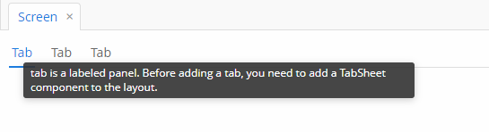

3.5.2.2.12. 标签页面板
TabSheet 容器是一个标签页面板。该面板一次只显示一个标签页的内容。
该组件的 XML 名称：tabSheet
下面是一个标签页面板的 XML 描述示例：
<tabSheet>
<tab id="mainTab" caption="Tab1" margin="true" spacing="true">
<dateField dataContainer="orderDc" property="date" caption="Date"/>
<lookupField dataContainer="orderDc" property="customer" optionsContainer="customersDc" caption="Customer"/>
</tab>
<tab id="additionalTab" caption="Tab2" margin="true" spacing="true">
<textField dataContainer="orderDc" property="amount" caption="Amount"/>
</tab>
</tabSheet>tabSheet 的 description 属性定义了一个提示信息，当用户将光标悬停在标签页区域上或单击标签页区域时，提示信息会显示在弹出窗口中。
tabSheet 组件应该包含 tab 元素来描述标签页。每个标签页都是一个具有类似于 vbox 的垂直组件布局的容器。
tab 元素属性:
-
id– 标签页标识符。请注意，标签页不是组件，它们的 ID 仅在TabSheet中使用，以便在控制器中引用标签页。 -
caption – 标签页标题。
-
description - 提示文本，当用户将光标悬停在具体标签页上或单击具体标签页时，提示文本会在弹出窗口中显示。

-
lazy– 设置标签页内容延迟加载。当界面打开时，延迟标签页不会加载其内容，这样可以减少内存中的组件数量。只有当用户选择某个标签页时，才会加载标签页中的组件。另外，如果延迟标签页包含连接到使用 JPQL 查询的数据源的可视化组件，也不会立即执行 JPQL 查询。因此，界面会打开得更快，并且只有当用户通过选择标签页请求数据时才会加载其中的数据。
请注意，当界面打开时，在延迟标签页上的组件是不存在的。因此，它们不能注入到控制器中，并且不能通过调用控制器的
init()方法中getComponent()方法来获得。只有在用户打开标签页后才能访问延迟标签页中的组件。可以使用TabSheet.SelectedTabChangeListener拦截这个操作，例如：@Inject private TabSheet tabSheet; private boolean detailsInitialized, historyInitialized; @Subscribe protected void onInit(InitEvent event) { tabSheet.addSelectedTabChangeListener(selectedTabChangeEvent -> { if ("detailsTab".equals(selectedTabChangeEvent.getSelectedTab().getName())) { initDetails(); } else if ("historyTab".equals(selectedTabChangeEvent.getSelectedTab().getName())) { initHistory(); } }); } private void initDetails() { if (detailsInitialized) { return; } detailsInitialized = true; (1) } private void initHistory() { if (historyInitialized) { return; } historyInitialized = true; (2) }1 在这里使用 getComponentNN("comp_id")方法获取标签上的组件2 在这里使用 getComponentNN("comp_id")方法获取标签上的组件默认情况下，标签页不是
lazy延迟加载，在界面打开时就会加载所有内容。可以使用 isUserOriginated() 方法来跟踪
SelectedTabChangeEvent事件的来源。- 标签页布局样式
-
在具有 Halo-based 主题的 Web 客户端中，可以使用 XML 描述或界面控制器中的
stylename属性为TabSheet容器设置预定义样式：<tabSheet stylename="framed"> <tab id="mainTab" caption="Framed tab"/> </tabSheet>当以编程方式设置样式时，请使用
HaloTheme类中的以TABSHEET_为前缀的常量：tabSheet.setStyleName(HaloTheme.TABSHEET_COMPACT_TABBAR);-
centered-tabs- 使得标签页在标签栏内居中。如果所有标签页完全适合标签栏（即没有标签栏滚动），效果最佳。
-
compact-tabbar- 减少标签栏中标签页周围的空白。
-
equal-width-tabs- 为标签栏中的所有标签页提供相等的宽度（即所有标签页的展开比例都为 1）。如果标签页标题不适合标签页会被缩短。应用此样式时标签页滚动将会被禁用（所有标签页将同时显示）。
-
framed- 在整个组件周围以及标签页栏中的各个标签页周围添加边框。
-
icons-on-top- 在标签页标题上显示标签页图标（默认情况下，图标位于标题的左侧）。
-
only-selected-closeable- 只有选中的标签页显示关闭按钮。不会阻止以编程方式关闭标签页，它仅仅是对用户隐藏了关闭按钮。
-
padded-tabbar- 为标签栏中的标签页周围添加少量内边距，以便它们不会紧挨着组件的外边缘。
-
- tabSheet 的属性
-
caption - captionAsHtml - contextHelpText - contextHelpTextHtmlEnabled - css - description - descriptionAsHtml - box.expandRatio - height - id - stylename - tabCaptionsAsHtml - tabIndex - tabsVisible - visible - width
- tab 的属性
-
caption - closable - description - enable - expand - margin - icon - id - lazy - spacing - stylename - visible
- tabSheet 的预定义样式
-
centered-tabs - compact-tabbar - equal-width-tabs - framed - framed - only-selected-closeable - padded-tabbar
- API
-
add - addSelectedTabChangeListener - getComponent - getComponentNN - getComponents - getOwnComponent - getOwnComponents - remove - removeAll